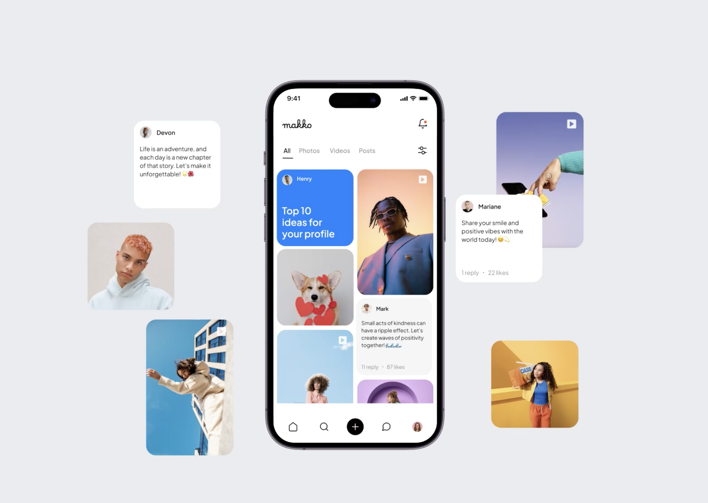

Onboarding redesign to drive activation on a self-served construction platform

Lifted activation, cut time to first project, and gave users a path that matched how they actually wanted to start.
HP Build Workspace is a cloud collaboration platform built for construction projects. It connects the office and the field — teams can manage drawings, capture site observations, pin photos to floor plans, and generate reports automatically.
When I joined the project, the product was going through a significant transition. The primary user shifted from architects to construction managers — people who are on-site, time-poor, and not necessarily tech-savvy. At the same time, the go-to-market model moved from reseller-led to self-served. That second shift is what made onboarding critical. Resellers used to guide new users through the product personally. That safety net was gone. Users would now arrive alone and figure it out on their own.
We defined activation as two actions: creating a first project and uploading at least one file. These two actions represent the minimum moment where a user understands the core loop of the product — and where they're likely to come back.
The problem was that users were registering but not reaching that moment. With a self-served model and an early-stage product still refining its value proposition, there was no second chance. If a user dropped off in the first session, there was no reseller to recover them.
We couldn't tailor the experience by role or use case at this stage. It's on the roadmap, and designing without it actually pushed us toward simpler, more universal solutions.
The PM needed role and company size from new users early on. The design challenge was making it feel like workspace setup rather than a survey — a small framing shift that made a real difference.
Full-screen onboarding was my instinct — more intentional, less interruptive. But the modal was already built and iteration speed mattered. So we made the modal work harder instead of starting from scratch.
The value proposition and target user were evolving while we designed. It pushed us to focus on what was universally true — users need to understand the product and reach their first value moment as fast as possible.
The core approach was to design the first time experience around user intent. Onboarding should adapt to how and why someone registers — the entry point matters. We started with users coming from the main product landing page, and the 3-step structure was built around that context.
Frame the workspace setup as something being configured for the user — sets the right tone before anything else.
Collect role and company size, but positioned as personalizing their workspace — not filling in a form.
The most important decision in the project. New users arrive with two different intents: some are ready to start, others need to see value first. So instead of one path, I gave them a choice — create your first project or explore a sample project with real data already in it.
After the modal, a contextual tour highlights the main features — bridging the gap between choosing a path and knowing what to do inside the product.
Onboarding doesn't end when the modal closes. The first time experience initiative redesigned all empty states across the product — the moments where a new user lands somewhere with nothing in it yet. Empty states are part of onboarding. They're the product's chance to tell the user what belongs here and what to do next.
The design decision I'd stand behind most is the two-path fork. It's the moment where the onboarding stops being a gate and starts being genuinely useful — because it meets users where they actually are, not where we assumed they'd be.
If I were to do this differently, I'd push harder earlier for discovery. I designed without talking to a single construction manager directly. The ICP shift from architects to construction managers was a significant assumption, and I was building on top of it without validating it. That's the gap I'd close first if I had the chance again.
This covers the highlights of my contributions — there's more behind the research, iterations, and edge cases.
Reach out to [your@email.com] to see the full case study.